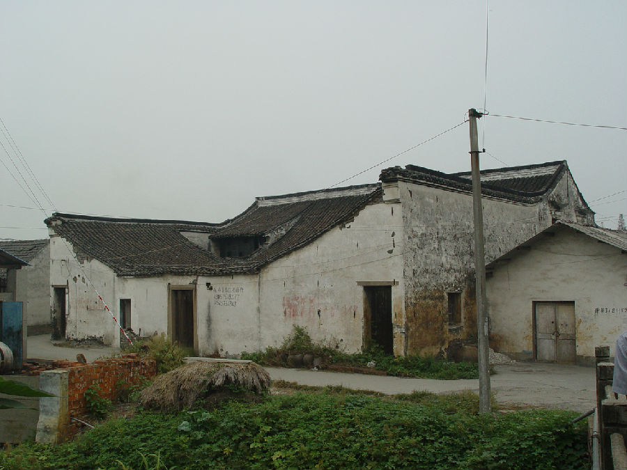

嘉兴市文物保护网 · 市级文物保护点 · 2020-11-09 · 原文

半墩祠堂位于嘉兴市南湖区东栅街道半墩村4组，据建筑形制判断，祠堂为清至民国建造，占地面积516平方米，坐北朝南，原有两进，现仅存一进二层正厅及天井两侧厢房。用料粗大，做工较精。梁上有细致雕工，厢房尚存部分排窗，窗上雕有纹饰，墙体用青砖铺设，屋顶为硬山顶，正脊两端有飞瓴。目前祠堂建筑在嘉兴发现较少，在同类型建筑中半墩祠堂保存较好，具有较高的历史价值。1992年公布为嘉兴市文物保护点。